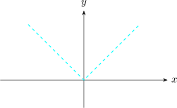
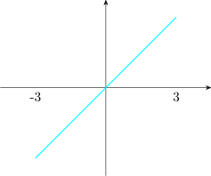
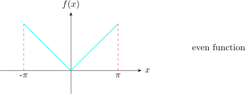

7.6 Even and Odd Functions
A function \(y = g(x)\) is even if \(g(-x) = g(x)\hspace {0.2cm}\forall x\). The graph of such a function is symmetric with respect to the \(y-\)axis.

A function \(h(x)\) is odd if \(h(-x) = -h(x)\hspace {0.4cm}\forall x\)
Properties
- 1.
- if \(g(x)\) is even, then \(\displaystyle {\int ^L_{-L} g(x)dx = 2\int ^L_0 g(x)dx }\)
- 2.
- If \(h(x)\) is odd, then \(\displaystyle {\int ^L_{-L} h(x)dx =0}\)
Fourier Series of Even and Odd Functions
The Fourier series of an even function of period \(2L\) is a “Fourier Cosine series” \[f(x) = a_0 + \sum ^{\infty }_{n=1}a_n \cos \frac {n\pi }{L}x\] with coefficients \[a_0 = \frac {1}{L}\int ^L_0f(x)dx\hspace {0.3cm}, \hspace {0.5cm} a_n = \frac {2}{L}\int ^L_0 f(x) \cos \frac {n\pi }{L}xdx\]
The Fourier series of an odd function is a “Fourier Sine” series \[f(x) = \sum ^{\infty }_{n=1}b_n \sin \frac {n\pi }{L}x\]
\[\text {with}\hspace {0.5cm} b_n = \frac {2}{L}\int ^L_0 f(x) \sin \frac {n\pi }{L}xdx\]
- 1.
- Find the Fourier series of the function \[f(x) = \begin {cases} -x, & \text {if}\hspace {0.3cm} -\pi < x < 0\\ & \hspace {3cm} f(x +2\pi ) = f(x)\\ x, & \text {if} \hspace {0.3cm} 0 < x < \pi \\ \end {cases} \]
- 2.
- Find the Fourier series of
\[f(x) =x \hspace {0.4cm}, \hspace {0.3cm}-3 < x < 3\]

Solution.
Part 1

Note. that \(f(x)\) is even so that \(b_n = 0,\hspace {0.2cm} \forall n = 1,2,\cdots \cdots \cdots \)
Hence, \(\displaystyle {f(x) = a_0 + \sum ^{\infty }_{n=1}a_n \cos n x}\)
\begin {align*} a_0 &= \frac {1}{\pi } \int ^{\pi }_0 f(x)\,dx = \frac {1}{\pi }\int ^{\pi }_0 x\,dx\\\\ & = \frac {\pi }{2}\\ \end {align*}
\begin {align*} a_n & = \frac {2}{\pi }\int ^{\pi }_0 f(x) \cos nx \,dx\\\\ & = \frac {2}{\pi }\int ^{\pi }_0 x \cos n x\,dx\\\\ & = \frac {2}{n^2\pi }\Big [\cos nx + nx\sin nx \Big ]^{\pi }_0\\\\ & = \frac {2}{n^2\pi }\Big [\cos n\pi + n\pi \sin n\pi - (1-0)\Big ]\\\\ & =\frac {2}{n^2\pi }\big [(-1)^n-1\big ] \end {align*}
\[a_n = \begin {cases} 0, & \text {if}\hspace {0.3cm} n \hspace {0.3cm}\text {is even}\\\\ \dfrac {-4}{n^2\pi }, & \text {if}\hspace {0.3cm} n \hspace {0.3cm} \text {is odd}\\ \end {cases} \]
\begin {align*} f(x) & = a_0 + \sum ^{\infty }_{n=1} a_n \cos nx\\ & = a_0 + a_1\cos x + a_2 \cos 2x + a_3\cos 3x+ \cdots \cdots \cdots \\\\ & = \frac {\pi }{2} - \frac {4}{\pi }\cos x - \frac {4}{9\pi }\cos 3x - \frac {4}{25\pi }\cos 5x - \cdots \cdots \\\\ & = \frac {\pi }{2}-\frac {4}{\pi }\Big (\cos x + \frac {\cos 3x}{9} + \frac {\cos 5x}{25}+ \cdots \cdots + \frac {\cos (2n-1)x}{(2n-1)^2}+\cdots \\ \end {align*}
Find the sum \(1 + \dfrac {1}{9}+ \dfrac {1}{25}+ \cdots \cdots \cdots \)
Let \(x=0 \implies f(0) = \dfrac {0+ 0}{2} = 0\)
\[f(0) = \frac {\pi }{2} - \frac {4}{\pi }\Big (1 + \dfrac {1}{9}+ \dfrac {1}{25}+ \cdots \cdots \cdots \Big )\hspace {0.3cm} \text {from the series}\]
\[\frac {-\pi }{2}= \frac {-4}{\pi }\Big (1 + \dfrac {1}{9}+ \dfrac {1}{25}+ \cdots \cdots \cdots \Big )\]
\[\therefore \hspace {0.5cm} 1 + \dfrac {1}{9}+ \dfrac {1}{25}+ \cdots \cdots + \cdots = \frac {\pi ^2}{8}\]
Part 2
\(P = 2L = 6 \implies L = 3\)
\(f(x)\) is odd and so \(a_n = 0\hspace {0.3cm}\forall n = 0,1,2,\cdots \cdots \)
Hence we get Fourier Sine series
\[f(x) = \sum ^{\infty }_{n =1} b_n \sin \frac {n\pi }{2}x\]
\begin {align*} b_n & = \frac {2}{L}\int ^L_0 f(x) \sin \frac {n\pi }{L}x\,dx\\\\ & = \frac {2}{3}\int ^3_0x \sin \frac {n\pi }{3}x\,dx\\\\ & = \frac {2}{3}\Big [\frac {-3}{n\pi }x\cos \frac {n\pi }{3}x\Big |^3_0 + \frac {3}{n\pi }\int ^3_0 \cos \frac {n\pi }{x}\,dx\Big ]\\\\ & = \frac {-6(-1)^n}{n\pi }\hspace {0.3cm},\hspace {0.3cm} n = 1,2,\cdots \cdots \\ \end {align*}
\[\implies \hspace {0.5cm} b_n = \begin {cases} \dfrac {-6}{n\pi } & \text {if}\hspace {0.2cm} n \hspace {0.2cm} \text {is even}\\\\ \dfrac {6}{n\pi } & \text {if}\hspace {0.2cm} n \hspace {0.2cm} \text {is odd}\\ \end {cases} \]
\begin {align*} \therefore \hspace {0.5cm} f(x) & = \sum ^{\infty }_{n=1}b_n \sin \frac {nx}{3}\\\\ & = \frac {6}{\pi }\sin \frac {\pi }{3} x - \frac {6}{2\pi }\sin \frac {2\pi }{3} x + \frac {6}{3\pi }\sin \pi x - \frac {6}{4\pi }\sin \frac {4\pi }{3} x + \cdots \cdots \ \end {align*}
Questions on this section
Stuck on something here? Ask below and it stays attached to this topic.